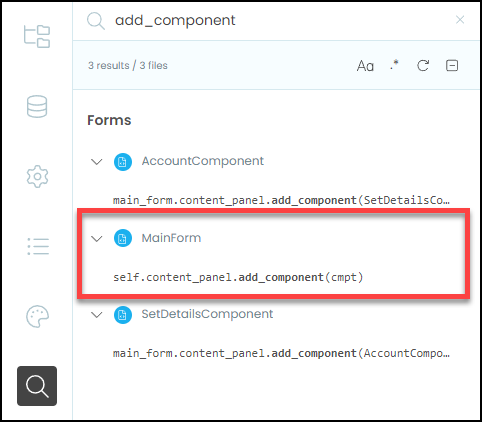

Switch Component Method¶
Last tutorial we encountered a problem that was caused by having our navigation code distributed throughout our codebase. This tutorial we will refactor the code so all this navigation code resides in the MainForm.
Preparing to refactor¶
When refactoring, it is important to ensure that your refactored code works just the same as the old code. This presents a problem for us, in that our current code does not work. So we need to adjust the code so that it at least runs without causing an error.
To do this we will simply remove the import that causes the error. Open your AccountComponent in code mode and delete line 8
1from ._anvil_designer import AccountComponentTemplate
2from anvil import *
3import anvil.server
4import anvil.tables as tables
5import anvil.tables.query as q
6from anvil.tables import app_tables
7import anvil.users
8from ..SetDetailsComponent import SetDetailsComponent
Code explaination
It is important to note that clicking the Edit Details button will still cause an error. We will worry about fixing this problem after we have refactored the code.
Planning¶
What we will do, is consolidate all the navigation code into one MainForm method called switch_component. Let’s look at the MainForm current navigation code to establish what this switch_component method needs to do.
Below is the navigation code in the link_home_click handler, what can we identify?
45 def link_home_click(self, **event_args):
46 self.content_panel.clear()
47 self.content_panel.add_component(HomeComponent())
48 self.label_title.text = self.breadcrumb_stem
49 self.set_active_link("home")
There are four highlighted lines indicate four steps to the navigation process:
line 46 → removes the current component
line 47 → adds the desired component
line 48 → sets the correct breadcrumb title
line 49 → set the correct active link
We need to include all four of these processes into our new switch_component method.
Remember in the set_active_link method, we passed a string to set the state of the MainForm (check below).
24 def set_active_link(self, state):
25 if state == "home":
26 self.link_home.role = "selected"
27 else:
28 self.link_home.role = None
29 if state == "add":
30 self.link_add.role = "selected"
31 else:
32 self.link_add.role = None
33 if state == "calendar":
34 self.link_calendar.role = "selected"
35 else:
36 self.link_calendar.role = None
We can use this same concept to send a state to the switch_component (eg. "home") and the switch_component method will respond to that state and load the HomeComponent
Ok, now put that into practice.
Code¶
Create the switch_component¶
Copy code from home_link_code¶
To implementing our plan:
Open the MainForm code mode
Create the new switch_component method above set_active_link - it will need to accept one argument called state.
25 def switch_component(self, state):
Go to the link_home_click method
Copy the code that is highlighted below
50 def link_calendar_click(self, **event_args):
51 self.content_panel.clear()
52 self.content_panel.add_component(CalendarComponent())
53 self.label_title.text = self.breadcrumb_stem + " - Calendar"
54 self.set_active_link("calendar")
Go back to the switch_component method.
Add the highlighted structural comment
25 def switch_component(self, state):
26 # execution
Then paste the code you copied
25 def switch_component(self, state):
26 # execution
27 self.content_panel.clear()
28 self.content_panel.add_component(HomeComponent())
29 self.label_title.text = self.breadcrumb_stem
30 self.set_active_link("home")
Make code generic¶
At the moment, the code just loads the HomeComponent. We want to change it so that it response to the state that is passed to switch_component.
Let’s consider each line of code:
25 def switch_component(self, state):
26 # execution
27 self.content_panel.clear()
28 self.content_panel.add_component(HomeComponent())
29 self.label_title.text = self.breadcrumb_stem
30 self.set_active_link("home")
line 27 → it is generic, so there is no need to change it
line 28 → we want to change the component loaded, so lets change
HomeComponent()to a variable calledcmpt. This variable can be set to different componentsline 29 → similarly, we want to change the bread_crumb according to the
state, so let’s replaceself.breadcrumb_stemwith a variable calledbreadcrumbline 30 → we want to call
set_active_linkwith thestatethat is passed, so replacehomewithstate.
With these changes your code should look like:
25 def switch_component(self, state):
26 # execution
27 self.content_panel.clear()
28 self.content_panel.add_component(cmpt)
29 self.label_title.text = breadcrumb
30 self.set_active_link(state)
Add response to state¶
Now we just need to use state to establish the values of cmpt and breadcrumb.
We will use an if ... elif statement to establish these values.
There are five possible states for our app:
"home"→cmpt = HomeComponent()andbreadcrumb = self.breadcrumb_stem"add"→cmpt = AddComponent()andbreadcrumb = self.breadcrumb_stem + " - Account""account"→cmpt = Account()andbreadcrumb = self.breadcrumb_stem + " - Add""calendar” →cmpt = CalendarComponent()andbreadcrumb = self.breadcrumb_stem + " - Calendar""details"→cmpt = SetDetailsComponent()andbreadcrumb = self.breadcrumb_stem + " - Account - Set Details"
So let’s put this into an if ... elif statement in our code
25 def switch_component(self, state):
26 # set state
27 if state == "home":
28 cmpt = HomeComponent()
29 breadcrumb = self.breadcrumb_stem
30 elif state == "account":
31 cmpt = AccountComponent()
32 breadcrumb = self.breadcrumb_stem + " - Account"
33 elif state == "add":
34 cmpt = AddComponent()
35 breadcrumb = self.breadcrumb_stem + " - Add"
36 elif state == "calendar":
37 cmpt = CalendarComponent()
38 breadcrumb = self.breadcrumb_stem + " - Calendar"
39 elif state == "details":
40 cmpt = SetDetailsComponent()
41 breadcrumb = self.breadcrumb_stem + " - Account - Set Details"
42
43 # execution
44 self.content_panel.clear()
45 self.content_panel.add_component(cmpt)
46 self.label_title.text = breadcrumb
47 self.set_active_link(state)
Replace old navigation¶
Now that we have create the switch_component method, we need to go through our codebase and replace all the navigation code with calls the the switch_component method.
The best way to find the navigation code is to do a search for the add_component method.
click on the search icon
type
add_componentinto the search box

MainForm¶
We can see that the MainForm has the majority of the navigation, so lets start there.
__init__¶
In the __init__ we have our first code to change, lines 22 and 23.
16 def __init__(self, **properties):
17 # Set Form properties and Data Bindings.
18 self.init_components(**properties)
19 self.breadcrumb_stem = self.label_title.text
20
21 # Any code you write here will run before the form opens.
22 self.content_panel.add_component(HomeComponent())
23 self.set_active_link("home")
They need to be replaced with a single call to switch_component passing the "home" state.
16 def __init__(self, **properties):
17 # Set Form properties and Data Bindings.
18 self.init_components(**properties)
19 self.breadcrumb_stem = self.label_title.text
20
21 # Any code you write here will run before the form opens.
22 self.switch_component("home")
link_click handlers¶
The rest of the old navigation code is in our various link_click handlers. We will use the link_home_click hander as an example. Below shows the code that needs to be removed.
68 def link_home_click(self, **event_args):
69 self.content_panel.clear()
70 self.content_panel.add_component(HomeComponent())
71 self.label_title.text = self.breadcrumb_stem
72 self.set_active_link("home")
Which is replaced with the code below:
68 def link_home_click(self, **event_args):
69 self.switch_component("home")
Do the same for:
link_account_clickhandlerlink_add_clickhandlerlink_calendar_clickhandler
link_register_click handler¶
In the link_register_click handler you will need to only replace the old navigation code (highlighted below).
81 def link_register_click(self, **event_args):
82 anvil.users.signup_with_form(allow_cancel=True)
83 self.content_panel.clear()
84 self.content_panel.add_component(SetDetailsComponent())
85 self.label_title.text = self.breadcrumb_stem + " - Account - Details"
86 self.set_active_link("details")
Add a switch_component call passing details as the state.
81def link_register_click(self, **event_args):
82 anvil.users.signup_with_form(allow_cancel=True)
83 self.switch_component("details")
link_login_click and link_logout_click handlers¶
The last two MainForm handlers we need to fix are the link_login_click and link_logout_click handlers. We’ll look at the link_login_click handler and then you can repeat the process for the link_logout_click handler.
Replace the highlighted text:
85 def link_login_click(self, **event_args):
86 anvil.users.login_with_form(allow_cancel=True)
87 self.content_panel.clear()
88 self.content_panel.add_component(HomeComponent())
89 self.label_title.text = self.breadcrumb_stem
90 self.set_active_link("home")
With a call to switch_component
85 def link_login_click(self, **event_args):
86 anvil.users.login_with_form(allow_cancel=True)
87 self.switch_component("home")
Check search results¶
After all those changes in MainForm, the only use of add_component should be in the switch_components method. This can be easily seen in the search box.

SetDetailsComponent¶
Next we will change the SetDetailsComponent, so open it in code mode.
Below is the old navigation code. Remember line 35 provides access to all methods in the MainForm. switch_component is on the MainForm, so we need to keep this line so we can access the method.
35 main_form = get_open_form()
36 main_form.content_panel.clear()
37 main_form.content_panel.add_component(AccountComponent())
38 main_form.label_title.text = main_form.breadcrumb_stem + " - Account"
39 main_form.set_active_link(("account"))
Remove the remaining navigation code, and replace it with a call to main_form.switch_component,
35 main_form = get_open_form()
36 main_form.switch_component("account")
Since we are no longer referencing AccountComponent() we can delete its import from the import section.
1from ._anvil_designer import SetDetailsComponentTemplate
2from anvil import *
3import anvil.server
4import anvil.tables as tables
5import anvil.tables.query as q
6from anvil.tables import app_tables
7import anvil.users
8from ..AccountComponent import AccountComponent
We should now only have two calls the add_component in our search box.
AccountComponent¶
Finally we will replace the code that started us down this refactoring path.
Open the AccountComponent in code mode.
Delete the highlighted lines from the button_edit_click handler
20 def button_edit_click(self, **event_args):
21 main_form = get_open_form()
22 main_form.content_panel.clear()
23 main_form.content_panel.add_component(SetDetailsComponent())
24 main_form.label_title.text = main_form.breadcrumb_stem + " - Account - Details"
25 main_form.set_active_link("details")
Then add your call to main_form.switch_component:
20 def button_edit_click(self, **event_args):
21 main_form = get_open_form()
22 main_form.switch_component("details")
This should leave you with only one reference to add_component in your search results.

Testing¶
Time to test our refactoring. This has been a significant change to our codebase so we have to be thorough in our testing.
Launch your website then:
Logout if you have to
Register a new user
Add user’s name details and then Save Details
Click Edit Details
Re-enter the user name details and click Save Details
Click Home
Click Calendar
Click Account
Click Logout
Click Login and enter user credentials
If you have refactored correctly, you should get through all of these steps without error.
Final code state¶
By the end of this tutorial your code should be the same as below:
Final SetDetailsComponent¶
1from ._anvil_designer import SetDetailsComponentTemplate
2from anvil import *
3import anvil.server
4import anvil.tables as tables
5import anvil.tables.query as q
6from anvil.tables import app_tables
7import anvil.users
8
9
10class SetDetailsComponent(SetDetailsComponentTemplate):
11 def __init__(self, **properties):
12 # Set Form properties and Data Bindings.
13 self.init_components(**properties)
14
15 # Any code you write here will run before the form opens.
16
17 def button_save_click(self, **event_args):
18
19 if self.text_box_first_name.text == "":
20 self.label_error.text = "First name cannot be blank"
21 self.label_error.visible = True
22 return
23
24 if self.text_box_last_name.text == "":
25 self.label_error.text = "Last name cannot be blank"
26 self.label_error.visible = True
27 return
28
29 self.label_error.visible = False
30 anvil.server.call("update_user",
31 self.text_box_first_name.text,
32 self.text_box_last_name.text)
33
34 main_form = get_open_form()
35 main_form.switch_component("account")
Final AccountComponent¶
1from ._anvil_designer import AccountComponentTemplate
2from anvil import *
3import anvil.server
4import anvil.tables as tables
5import anvil.tables.query as q
6from anvil.tables import app_tables
7import anvil.users
8
9
10class AccountComponent(AccountComponentTemplate):
11 def __init__(self, **properties):
12 # Set Form properties and Data Bindings.
13 self.init_components(**properties)
14
15 # Any code you write here will run before the form opens.
16 user = anvil.users.get_user()
17 self.label_first_name.text = user["first_name"]
18 self.label_last_name.text = user["last_name"]
19
20 def button_edit_click(self, **event_args):
21 main_form = get_open_form()
22 main_form.switch_component("details")
Final MainForm¶
1from ._anvil_designer import MainFormTemplate
2from anvil import *
3import anvil.server
4import anvil.tables as tables
5import anvil.tables.query as q
6from anvil.tables import app_tables
7import anvil.users
8from ..HomeComponent import HomeComponent
9from ..CalendarComponent import CalendarComponent
10from ..AddComponent import AddComponent
11from ..AccountComponent import AccountComponent
12from ..SetDetailsComponent import SetDetailsComponent
13
14
15class MainForm(MainFormTemplate):
16 def __init__(self, **properties):
17 # Set Form properties and Data Bindings.
18 self.init_components(**properties)
19 self.breadcrumb_stem = self.label_title.text
20
21 # Any code you write here will run before the form opens.
22 self.switch_component("home")
23
24 def switch_component(self, state):
25 # set state
26 if state == "home":
27 cmpt = HomeComponent()
28 breadcrumb = self.breadcrumb_stem
29 elif state == "account":
30 cmpt = AccountComponent()
31 breadcrumb = self.breadcrumb_stem + " - Account"
32 elif state == "add":
33 cmpt = AddComponent()
34 breadcrumb = self.breadcrumb_stem + " - Add"
35 elif state == "calendar":
36 cmpt = CalendarComponent()
37 breadcrumb = self.breadcrumb_stem + " - Calendar"
38 elif state == "details":
39 cmpt = SetDetailsComponent()
40 breadcrumb = self.breadcrumb_stem + " - Account - Set Details"
41
42 # execution
43 self.content_panel.clear()
44 self.content_panel.add_component(cmpt)
45 self.label_title.text = breadcrumb
46 self.set_active_link(state)
47
48 def set_active_link(self, state):
49 if state == "home":
50 self.link_home.role = "selected"
51 else:
52 self.link_home.role = None
53 if state == "add":
54 self.link_add.role = "selected"
55 else:
56 self.link_add.role = None
57 if state == "calendar":
58 self.link_calendar.role = "selected"
59 else:
60 self.link_calendar.role = None
61
62 self.link_register.visible = not anvil.users.get_user()
63 self.link_login.visible = not anvil.users.get_user()
64 self.link_account.visible = anvil.users.get_user()
65 self.link_logout.visible = anvil.users.get_user()
66
67 # --- link handlers
68 def link_home_click(self, **event_args):
69 self.switch_component("home")
70
71 def link_calendar_click(self, **event_args):
72 self.switch_component("calendar")
73
74 def link_add_click(self, **event_args):
75 self.switch_component("add")
76
77 def link_account_click(self, **event_args):
78 """This method is called when the link is clicked"""
79 self.switch_component("account")
80
81 def link_register_click(self, **event_args):
82 anvil.users.signup_with_form(allow_cancel=True)
83 self.switch_component("details")
84
85 def link_login_click(self, **event_args):
86 anvil.users.login_with_form(allow_cancel=True)
87 self.switch_component("home")
88
89 def link_logout_click(self, **event_args):
90 anvil.users.logout()
91 self.switch_component("home")